Here’s a handy glossary of the obtuse internet
slang, technical jargon, and anatomical terms that come up in
discussions about keyboards. Most entries include links to resources
with further description. For more depth or anything keyboard-related
not covered here, r/ErgoMechKeyboards
is a good place to ask.
40% / 60% / X%
40%, 60%, or other “X%” denote the approximate
number of keys on a keyboard, relative to 100% being a standard keyboard
(104 keys in the US, 105 outside the US).
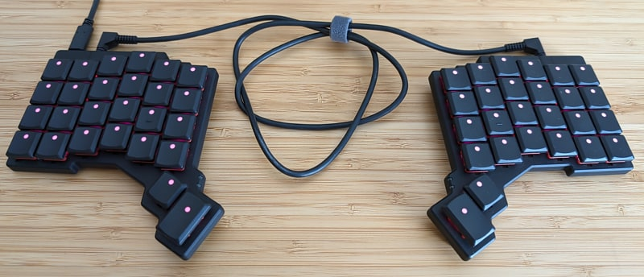
Example of a “50%” keyboard, having 52
keys (ZSA Voyager).
A tenkeyless or TKL is a keyboard
without the number pad.
An alpha layout is an arrangement of the alphabet
keys on the keyboard. The alpha layout is QWERTY on a
standard US keyboard. Dvorak and
Colemak are two examples of alternative layouts. There
are many others, see the references below.
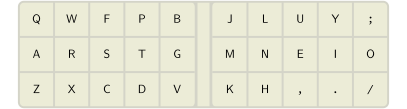
Colemak-DH, a popular
alternative alpha layout.
Most modern alternative layouts focus on improved typing comfort and
efficiency, with keys arranged such that awkward motions are avoided.
This is usually evaluated in terms of metrics that quantify the
frequencies of specific undesired finger motions, such as same-finger bigrams and rolls, measured over a given text corpus.
Mods are engaged as one-shot (sticky) keys on the home row of a
secondary layer. This layer is accessed by a momentary layer switch from
the base layer. As Callum says, “You can and should hit chords as fast
as you like because there are no timers involved.” In contrast to home row mods, Callum-style mods entirely
avoid mod-tap keys.
Caps Word
Caps Word is a modernized Caps Lock that
automatically disables at the end of the word, useful for typing
abbreviations and ALL_CAPS identifiers.
The carpal tunnel is a narrow passageway on the palm
side of the wrist formed by the arch-shaped carpal bones and
flexor
retinaculum connective tissue. The flexor tendons to the fingers and
the median
nerve pass through the carpal tunnel.
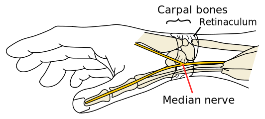
Median nerve passing through the carpal
tunnel.
Carpal
tunnel syndrome (CTS), also more specifically referred to as
Idiopathic Median Neuropathy at the Carpal Tunnel (IMNCT), is a
condition where the median nerve is pinched in the carpal tunnel,
perhaps because inflammation caused surrounding tissues to swell and
decrease the space in the tunnel.
Debouncing
Debouncing is a method to ignore “bounces” in raw
key press signals. Electrical contacts in a key
switch are usually springy material. When the switch is pressed, the
contacts bounce, causing a phenomenon called contact bounce or chatter
where the raw digital reading bounces between 0 and 1 before settling to
a steady contact.
EEPROM or electrically erasable programmable
read-only memory is a small amount of rewritable memory that
persists even without power (non-volatile memory). Some keyboards save
certain settings in EEPROM, such magic settings on
QMK-based keyboards. These settings are retained when the keyboard is
unpowered and even when new firmware is
flashed.
Firmware
A keyboard’s firmware is software that runs on the
microcontroller. This software
scans the matrix circuit, debounces the raw signals, and sends reports of key events to the host computer.
On a standard keyboard, firmware is stored in read-only memory.
On a programmable keyboard, firmware is stored in flash memory and
can be rewritten to update it. Additionally, the microcontroller
processes features such as layers, macros, and
mod-taps. Well-known firmware for
programmable keyboards include QMK
firmware and ZMK firmware.
HRMs have the benefits that “modifier+key” chords are easier to press
and that no dedicated keys are needed for the modifiers.
HRMs are challenging in that they are prone to accidental mod
triggers in fast typing. Callum-style
mods are a popular alternative. HRMs can be made effective with good
configuration and practice, as discussed in Home row mods
are hard to use.
Homing keycaps
Homing keycaps are keycaps
with a distinctive tactile ridge or dish, conventionally on the
F and J keys (home row index finger positions in
QWERTY layout). This feature allows typists to locate home position
without needing to look at the keyboard.
Hot-swappable switches
The printed circuit board or
PCB of a mechanical keyboard may support hotswapping
the key switches, meaning the switches can be
easily changed using a key puller tool. The switch snaps into a
swappable keysocket without using solder. In contrast,
switches in a non-swappable mechanical keyboard are soldered to the
PCB.
Key rollover (6KRO, NKRO)
Key rollover is the max number of simultaneously key
presses that can be correctly reported.
6KRO (6-key rollover) means reporting up to six keys at
once. NKRO (N-key rollover) means any number of keys
may be pressed at once.
Key switch
A key switch in a mechanical keyboard registers when
it is pressed and represents this as an electrical signal. Switches are
electrically connected to the matrix
circuit. The choice of switch affects the feel and sound of the
keyboard.
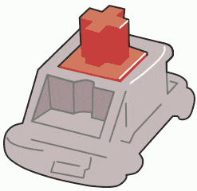
A key switch in action.
Some key switch terminology:
Pre-travel is the depth or distance of travel
before reaching the actuation point where the switch
actuates and registers the press.
Total travel is the full distance of travel
before bottoming out the switch.
Actuation force is the minimum force needed to
actuate the switch. This force is conventionally reported in units of gf
(gram-force) or cN (centinewtons), being close to equal at 1 gf ≈
0.98 cN. Actuation force of around 45 gf is typical.
The keycap mounts on the
stem on the top of the switch. There are several types
of stems, including MX-style stems with a cross shape,
box stems in some Kailh switches, and Choc
stems having two prongs. Keycaps must be compatible to
mate.
Key wells are an ergonomic feature on some keyboards
where off-home rows curl toward the fingers, and the depths of the
columns are designed to fit the length of the finger, forming concave
“wells.” Dactyl is a family of open source keyboards featuring key
wells.
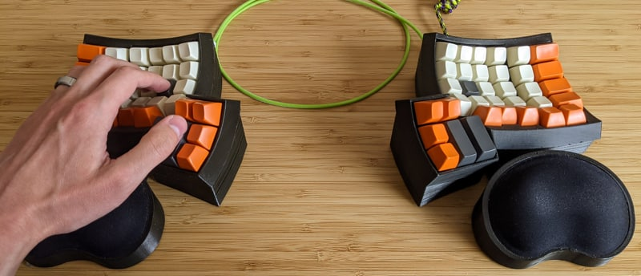
A keyboard with concave key wells (Dactyl
Ergodox).
The idea is that keys off the home row can be reached with less
finger movement than would be needed on a flat keyboard.
Key wells may also describe a cluster of keys around every finger, as
in the DataHand and Svalboard keyboards. This design enables typing with
extremely low finger movement.
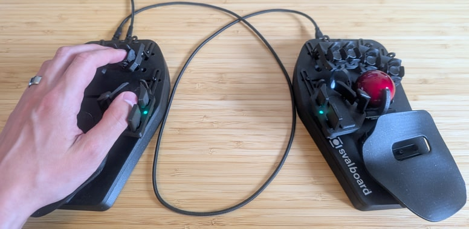
A keyboard where each finger has a key
well (Svalboard Lightly).
Keyboard report
The microcontroller sends
keyboard reports to the host computer to indicate key
presses and changes in modifier state. The
report contains an array of keycodes that are currently held as defined
in HID
Keyboard/Keypad Usage Page (0x07) spec. The mods state is
represented as an 8-bit bitfield:
Typically, the report has capacity to represent up to 6 held keys at
once, implementing 6-key
rollover:
For N-key rollover, the report
is extended with a 120-bit bitfield to represent the state of all 120
supported keys:
Keycap
The keycap is the flesh-facing part of the key that
is pressed with the finger. On mechanical keyboards, it mounts on the
stem of the key switch.
Some keycap terminology:
Keycap profile is the shape of the top surface
of the keycap. Common profiles include Cherry profile, SA (Spherical
All), DSA (Deep Sculpted Angled), and MT3 (Matt3o). The profile often
differs for different rows of the keyboard.
Keycaps often have a legend to label what
function the key has. Printed legends are cheap but
fade with wear. Double shot and dye
sublimation are more expensive manufacturing methods with
better durability.
Stabilizers or stabs are
components used with larger keycaps to prevent wobble and rattle and
ensure even key travel.
Artisans are decorative, handmade keycaps,
treated like a piece of art.
Most keycaps are made of ABS (acrylonitrile
butadiene styrene), PBT (polybutylene terephthalate),
or less commonly POM (polyoxymethylene) plastics.
Summary comparison:
A lateral stretch bigram or LSB is
a two-key sequence typed by adjacent fingers where a lateral stretch
(abduction) is involved to reach the keys. How frequently LSBs occur is
often considered in layout design. LSBs are
generally considered undesirable.
What exactly constitutes a “lateral stretch” is complicated,
influenced by hand size, wrist angle, and whether the keys are row staggered or
something else.
Example: Typing ET on QWERTY is an LSB with the
left middle and index fingers. The fingers stretch laterally apart to
span the 2u distance between keys E and T.
Macro key
A macro key is a key that, when pressed, sends a
predefined sequence of keys such as typing your email address. Or used
more broadly, a macro describes a key having some customized
function.
⚠ Warning
Don’t use macros to type passwords or credit card
numbers. Otherwise if someone has physical access to your
keyboard, they can access this info.
A matrix circuit is a grid-like circuit, often
etched in a printed circuit
board, connecting the key switches to the
digital IO pins of the microcontroller. Its design
determines a matrix position for each key. There may be
unused positions and irregularities, such as around wide keys.
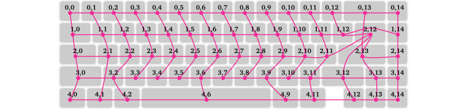
Matrix for the Aurora65 (traces to the
microcontroller not shown).
A keyboard has a microcontroller unit or
MCU, a small computer. It runs firmware to scan the matrix circuit and send reports of key events to the host
computer.
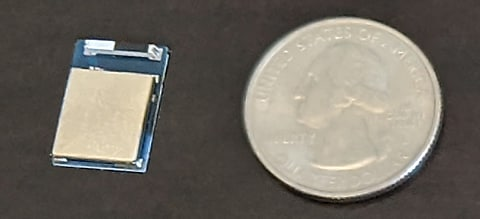
nRF52840 microcontroller, next to a
quarter for scale.
Keyboards often use cheap AVR microcontrollers, like the Pro Micro
and Elite-C boards with the ATmega32U4 microcontroller. While they are
enough to get running, AVR microcontrollers have a stingy amount of
flash space, and you’ll need to be sparing in which firmware features to
enable in order to fit in that space (see Squeezing the most out of
AVR). If you have an option to use a better microcontroller, I’d
recommend it.
Modifiers
There are eight modifiers or mods
for short: Ctrl, Shift, Alt, and
GUI, all both on the left and right sides (as defined in the
HID
spec). The “GUI” mod, aka Super, corresponds to the Windows key on
Windows machines and Command ⌘ on Mac.
Outside the US, the right Alt modifier is commonly used as the AltGr key
(abbreviating “alternate graphic”) to type additional symbols.
Mod-tap key
A mod-tap key is a tap-hold or dual-role key that
behaves as a modifier (Ctrl, Shift, Alt, or
GUI) when held and as some other key when tapped. A common mod-tap use
is a key that behaves as Ctrl when held and Escape when tapped.
Mouse keys uses keyboard keys to emulate a mouse.
This includes keys for cursor movement, the mouse wheel, and the mouse
buttons.
Most keyboard keys are limited to digital on/off inputs. This makes
it difficult to support both large, fast movements and small, precise
movements. Mouse keys often speed up the longer they’re held down to
address this limitation. Another approach is to use dedicated keys to
change the movement speed.
On a keyboard with column staggered
layout, pinky stagger refers to the offset of pinky
columns. These columns are adjusted closer to the body to account for
the shorter length of the pinky fingers. An “aggressive pinky stagger”
describes a large offset.
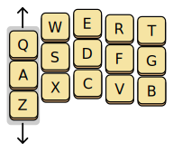
Pinky stagger on the left half of a
columnar keyboard.
Polling rate
Polling rate refers to how frequently the keyboard
sends keyboard reports to the host
computer. A higher rate reduces input lag and improves
responsiveness. A typical keyboard has a polling rate of at least
125 Hz, or once every 8 milliseconds. This is so fast that polling delay
is visually imperceptible, less than one frame of 60 fps video
(16.7 ms).
A printed circuit board or PCB is
sandwiched layers of conductive and insulating material. Conductive
traces and pads are etched to create an electrical circuit. In a
keyboard, the PCB implements the matrix
circuit and a footprint to seat the microcontroller. Not all keyboards
use a PCB. Some keyboards are hand wired instead.
Pronation / supination
Pronation and supination are medial
rotations of the radius about the ulna, as in the motions of turning a
screwdriver or key. Pronation turns the palm facing
downward. Supination is the opposite direction turning
the palm upward.
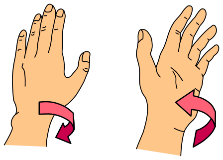
Left: Pronation. Right:
Supination.
When using a standard flat keyboard, the forearms
pronate fully to turn the palms down. Sustained
pronation increases pressure on the tissues and reduces blood
circulation. This can lead to fatigue and injury. Many ergonomic
keyboards are tented to reduce pronation.
Redirect
A redirect or roll reversal is a
sequence of three keys typed by one hand that changes roll direction from inward to outward or vice versa.
How frequently redirects occur is often considered in layout design. Redirects are generally
undesirable, as they tend to be more difficult to type quickly compared
to sequences that alternate hands or maintain the same roll
direction.
Redirects might be more tolerable when they involve an index finger,
since they are especially dexterous. Redirects that do or don’t include
index fingers are sometimes distinguished, e.g. “weak redirects,” though
terminology varies.
Examples, on QWERTY:
SAD is a redirect: S → A rolls
outward, and A → D rolls inward.
ARE is a weak redirect, with R is typed by
left index finger.
NOW is not a redirect, since it is not a
one-handed typing sequence.
Roll
A roll is a sequence of two or more keystrokes made
by one hand, where the fingers move sequentially across the keyboard,
like drumming your fingers.
According to the direction, a roll is either an inward
roll, moving pinky → ring → middle → index, or an
outward roll, moving in the opposite direction. On
QWERTY, ER, LY, and AWE are
examples of inward rolls, and EA and IO are
outward rolls.
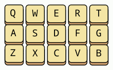
ER is an inward roll on
QWERTY.
Inward rolls are generally considered desirable. Modern alpha layouts are often designed to maximize
rolls. A rolly layout is a layout where rolls are
frequent.
Subjective preferences vary on whether outward rolls are also
favored. Accordingly, layouts sometimes maximize the in-roll
ratio, the frequency of inward rolls divided by the frequency
of outward rolls.
Row staggered /
ortholinear / column staggered
Standard keyboards have row staggered keys, with a
small horizontal offset from one row to the next. This is a vestige of
mechanical typewriters to make space for levers that connect each key to
the type hammers that strike the paper.
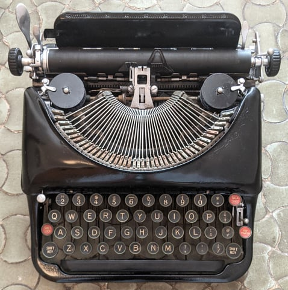
The connecting levers are visible between
the keys of this 1930s Remington portable typewriter. Photo by Mariochs,
distributed under a CC BY-SA
4.0 International license.
An ortholinear or matrix
arrangement removes the stagger and places all keys in a regular grid.
This helps reduce ulnar deviation in the left wrist.
Column staggered or columnar
arrangement staggers in the other dimension, following the natural
direction of the fingers. This further helps reduce ulnar deviation and makes
off-home rows easier to reach.
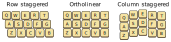
Different staggers illustrated for the
left half of a keyboard.
Same-finger bigram (SFB)
A same-finger bigram or SFB is a
two-key sequence in which both keys are typed by the same finger, such
as SW or UN on QWERTY with standard technique.
SFBs are generally considered undesirable. Modern alpha layouts are designed to minimize
them.
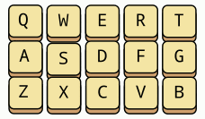
SW is an SFB since
S and W are pressed by the same
finger.
Same-finger skipgram (SFS)
A same-finger skipgram or SFS, also
known as a disjointed same-finger bigram or
DSFB, is a key sequence in which two keys are typed by
the same finger, separated by one or more keys. How frequently SFSs
occur is often considered in layout design.
Reducing SFSs is desirable to reduce how quickly fingers need to be
repositioned.
A skip-1-gram has one key in between, and generally
a skip-N-gram has a skip distance of N keys in between.
By extension of this terminology, a same-finger bigram would be a
“skip-0-gram.”
Example: When typing WAS on QWERTY, the left
ring finger types W and S, and the pinky types
A. Therefore WAS is an SFS, specifically, a
“same finger skip-1-gram.”
Simultaneous
opposing cardinal directions (SOCD)
Simultaneous Opposing Cardinal Directions or
SOCD refers to physically pressing two keys of opposing
direction at the same time, such as of the A and D
keys in WASD gaming input. SOCD cleaning performs
filtering of simultaneous inputs, applying a resolution
rule to decide which key is active. A player can leverage SOCD filtering
to make fast inputs for competitive advantage.
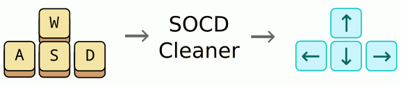
SOCD cleaning with last input priority
resolution.
Splay is the angle between the two sides of a split keyboard. Splaying can help put the
wrists in alignment with the forearms to avoid ulnar deviation.
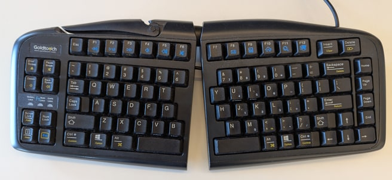
Keyboard with adjustable splay (Goldtouch
V2).
Splay may also describe angles between fingers. Some columnar layout
designs include a splay angle between the columns.
Layout with splay between the
columns.
Split keyboard
A true split keyboard is split in two separate
modules, connected by a flexible cable or wireless connection. The
separation and splay of the two sides can be
adjusted to enable the user to achieve a neutral wrist position and
avoid ulnar deviation.
On many true split designs, the tenting angle can
be adjusted as well.
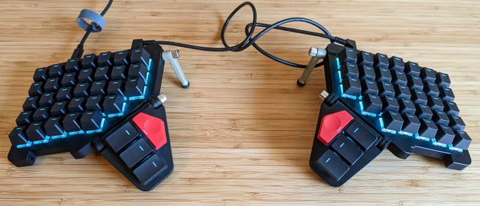
Example of a true split keyboard (ZSA
Moonlander).
Each side has its own matrix circuit
and microcontroller. The two
sides communicate matrix scan events, often through a TRRS cable, though designs with a USB cable or
wireless connection are also used.
A unibody split keyboard, aka monoblock-, fixed-, or
pseudo-split, has two halves connected splayed at
an angle as a single unit. While there is usually no separation or
flexibility to adjust the splay or tenting, it is yet an improvement
over conventional keyboards in achieving a neutral wrist position. Most
unibody designs use a single shared microcontroller and printed circuit board, enabling
simpler assembly.
Example of a unibody split keyboard
(Goldtouch V2).
TRRS cable
The two halves of a split keyboard are
commonly connected using a TRRS cable with 4-contact
tip-ring-ring-sleeve connectors or similarly a TRS
cable (tip-ring-sleeve). It provides data synchronization and
power delivery between the two sides.
Caution: do not connect or disconnect the TRRS cable while
the keyboard is powered. Doing so may create a short circuit
and damage the keyboard. Some keyboards have short protection to
tolerate this, but even so, it’s safer to unpower the keyboard first
before connecting or disconnecting the TRRS cable.
Tenting
Tenting is angling each side of the keyboard in the
supinating direction, an ergonomic
feature on many split keyboards. This enables the forearms to reduce pronation by adopting a more
anatomically neutral position while typing. Some keyboards have a fixed
tenting angle while some have adjustable tenting, where
the angle can be changed with folding support legs or a similar
mechanism.
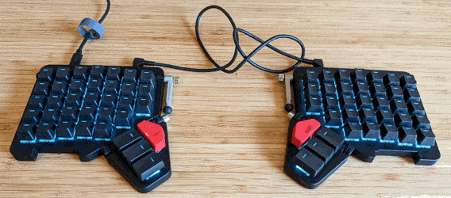
An example tenting a keyboard (ZSA
Moonlander).
Thumb clusters
Thumb clusters are a set of keys to be pressed by
the thumbs, as found on most split
keyboards. The number of thumb keys and their relative positioning
varies across models. Dactyl and Kinesis Advantage keyboards have thumb
clusters of 6 keys per side while the ZSA Voyager has just 2 keys per
side.
Right-hand thumb clusters on a few different keyboards.
For users with pinky discomfort, thumb keys can be ergonomically
beneficial in offloading work conventionally done by the pinkies to the
thumbs, such as modifier keys or the Backspace
key. However, thumbs can get overuse
injuries, so don’t overdo it. Thumbs are strong, but not
invincible.
Tilt
Positive tilt inclines the back edge of the keyboard
higher than the front. Negative tilt is the opposite
direction, with the back edge lower than the front.
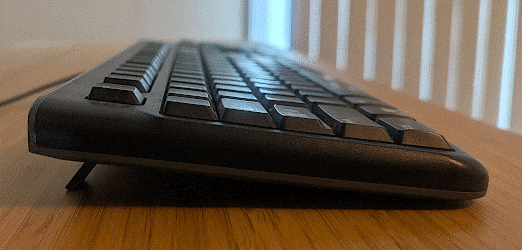
Positive tilt on a standard
keyboard.
Most keyboards come with feet that can be extended for positive tilt.
Although common, their use is ergonomically risky. OSHA
recommends against using keyboard feet if they increase bending of
the wrist. Tilting the keyboard up can force the wrists into sustained
wrist extension, which strains
the forearm extensor muscles.
Ulnar deviation / radial
deviation
Ulnar deviation of the wrist is angling the hand in
the direction of the pinky and ulna bone. Radial
deviation is the opposite, in the direction of the thumb and
radius bone.
Ulnar deviation of the wrist constricts the carpal tunnel, which reduces blood flow,
strains the tendons and muscles, and puts pressure on the median nerve.
Prolonged typing in this posture can lead to fatigue, numbness, and
injury.
The keyboard should be at a comfortable distance from the body to
prevent ulnar deviation and other awkward body postures. A split or splayed
keyboard can help avoid ulnar deviation. Column stagger
can help as well on the left hand. For additional guidance, see OSHA’s
recommendations on keyboard ergonomics.
Words per minute (WPM)
Typing speed is usually reported in units of words per
minute or WPM.
To account for that words have varying length, a “word” in WPM
measurement is typically defined as 5 characters, counting also spaces
and punctuation. That is, WPM = CPM / 5, with CPM being the
characters per minute. In English, the average word
length is about 4.7 letters (see e.g. Average word length dynamics as
indicator of cultural changes in society), so the conversion factor
of 5 is pretty well calibrated.
Wrist extension engages the forearm extensor muscles
to raise the back of the hand toward the arm. Wrist
flexion is the opposite direction, using the forearm flexor
muscles.
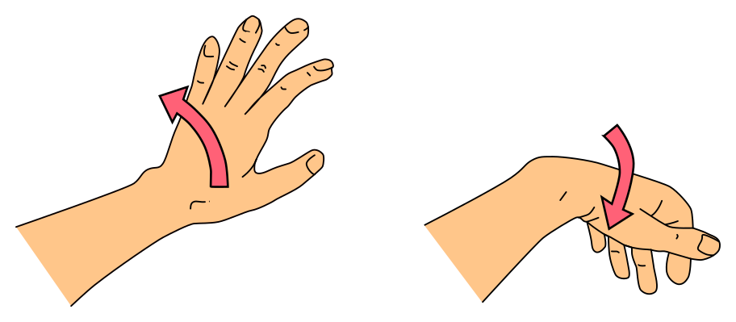
Left: Wrist extension. Right: Wrist
flexion.
Maintain your elbows at about the same height as the keyboard when
typing. Otherwise, typing with the keyboard at an improper height forces
you to hold your hands at an unnatural angle, straining the forearm
extensors. Additionally, it’s best to avoid elevating the back of the
keyboard (positive tilt) for the same reason.